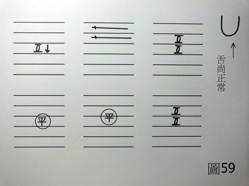

兵棋推演 3：張無忌腹脹
作者：陳建元
〈圖59〉：
假設條件：張無忌男25歲左右70公斤左右，張無忌最近練完乾坤大挪移功法之後，總是感覺腹脹，有時還會腹瀉，自忖並無吃到什麼不乾淨的東西，納悶為何會有腹脹、腹瀉的現象。

〈以下用科中，一日四次。即早餐後服用一次，中餐後服用一次，晚餐後服用一次，睡前再服用一次。〉
藿香 5 沙參 1 乾薑 1 黨參 1
〈依上述比例混合之後，每次服用6克，一日四次。〉
【思路探索】：
1. 會腹脹、腹瀉的病候很多，由外候上很難判別是怎麼回事。
2. 但是在脈象上的證據，脾脈特別的浮弦，由此可以知道是腸胃型的感冒（即病毒性的腸胃炎）。
3. 心脈、肝脈、兩尺脈都還好，只要針對肺脈、脾脈來處理即可。
4. 故以藿香為君藥而重用，除去脾脈上的外感風寒；肺脈偏虛，稍用黨參助之；脾脈畢竟是細脈，代表脾胃的陰分與陽分，畢竟還是有不足的地方，故稍用沙參、乾薑助之。
【引用請先來信告知徵求同意，若有涉及販售營利等商業行為，版權所有拷貝盜用必究。】
【藥王脈學講壇】http://blog.xuite.net/drjychen/twblog